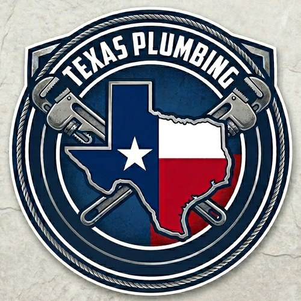

Theoretical Exam Simulator for the Texas Tradesman Plumbing License
Three different versions are available. Each exam covers all 10 topics of the theoretical portion and includes 5 unique trap questions designed to test your attention to detail.
Your 5-minute limit has ended. Let's see your final score.
Hi, I'm Oliver Granja, a candidate pursuing my Tradesman Plumber-Limited License in Texas. I built this practice exam as a tool to help myself study — and to share it with other aspiring plumbers who want to practice for the theoretical portion of the exam and pass on their first attempt.
This website is an independent practice tool and is NOT affiliated with, endorsed by, or connected to the Texas State Board of Plumbing Examiners (TSBPE) or any state agency. It does NOT replace the official training required by law to qualify for the Tradesman Plumber-Limited Examination.
According to the Texas State Board of Plumbing Examiners (TSBPE), applicants for the Tradesman Plumber-Limited License must complete 24 hours of classroom training through a TSBPE-approved course provider, which includes:
Additional requirements include being registered as a Plumber's Apprentice in Texas, having at least 4,000 hours of documented plumbing experience, submitting fingerprints, and paying the exam fee. The written exam is closed book and the minimum passing score is 70%.
The goal is simple: to offer a free, convenient, and well-organized way to practice exam-style questions based on core plumbing code concepts. Use it as a complement to — never as a replacement for — your official TSBPE-approved training.
For authoritative and current information, visit the official TSBPE website: tsbpe.texas.gov
No. This practice exam is a study aid only. The TSBPE requires 24 hours of official classroom training — including 8 hours on the IRC/UPC code, a 6-hour CPE course, and OSHA 10-hour training — from an approved provider. You cannot legally take the Tradesman exam without completing that training.
No. These are original practice questions inspired by common residential plumbing code topics. The actual exam questions are confidential and controlled by the TSBPE. The real exam has 85 multiple-choice questions plus a hands-on component.
Unlimited times. Practice as much as you want — your progress is saved locally on your device only, and no account is required.
It's designed to simulate pressure and help you practice quick decision-making. The real exam gives you 120 minutes for 90 written questions, but this short-format simulator focuses on rapid recall of key concepts.
Trap questions are specifically designed to catch common mistakes — things like confusing measurements, misreading "true/false" statements, or mixing up similar code requirements. Each exam includes 5 different trap questions marked with a red ⚠️ tag.
Email texasplumbingprep@gmail.com with the exam number, question text, and what you think should be corrected. I review all feedback.
Yes. The question bank will expand over time with user feedback and updates to the plumbing code. Check back periodically.
As of 2025, the TSBPE charges a $36 exam fee plus a $35 initial license fee once you pass. Training courses and fingerprinting have separate costs through approved providers. Always verify current fees at tsbpe.texas.gov.
Have a question, suggestion, or found an error in one of the questions? I'd love to hear from you.
Response time is typically within a few days. All feedback is reviewed and appreciated.
Last updated: 2025
Texas Plumbing Prep does NOT collect any personal information. We do not require registration, accounts, emails, or payment information to use the practice exam.
This website uses your browser's localStorage only to remember your theme preference (light or dark mode). This data stays on your device and is never transmitted anywhere. You can clear it at any time through your browser settings.
This website does NOT use tracking cookies, advertising cookies, or third-party trackers.
The website contains links to external sources including tsbpe.texas.gov (official Texas State Board of Plumbing Examiners) and paypal.me (for optional donations). We are not responsible for the content or privacy practices of external sites.
The site loads fonts from Google Fonts, which may collect anonymous technical data (such as browser type) per Google's privacy policy.
For privacy-related questions, email texasplumbingprep@gmail.com.
Last updated: 2025
By using Texas Plumbing Prep, you agree to these Terms of Use. If you do not agree, please do not use this site.
This website is provided for educational and study purposes only. It is an independent practice tool and is NOT affiliated with, endorsed by, or connected to the Texas State Board of Plumbing Examiners (TSBPE) or any government agency.
The content is provided "as is" without any warranty. Using this practice exam does NOT guarantee that you will pass the official Tradesman Plumber-Limited Examination or any other licensing exam. Success depends on your own study, experience, and completion of the TSBPE-required training.
While we strive for accuracy, plumbing codes and regulations may change. Questions are based on general code concepts but may contain errors or be outdated. Always verify current requirements with official sources, including the IRC, UPC, and TSBPE publications.
Content on this site does not constitute legal advice, professional advice, or licensing guidance. Consult a qualified master plumber or contact the TSBPE directly for authoritative information.
The author shall not be held liable for any direct, indirect, or consequential damages arising from the use of this website, including but not limited to exam failure, misapplication of code requirements, or work-related issues.
All original content (questions, explanations, design) is © 2025 Oliver Granja – ViscaCode. Referenced code names (IRC, UPC) belong to their respective organizations.
These terms may be updated at any time without notice. Continued use of the site after changes constitutes acceptance of the new terms.
If this practice exam helps you prepare for your Tradesman license, consider supporting the project so I can keep it online and add more questions.